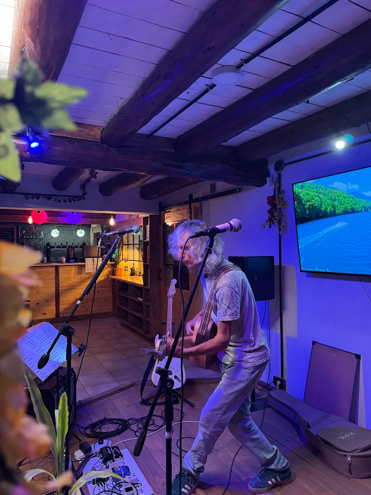
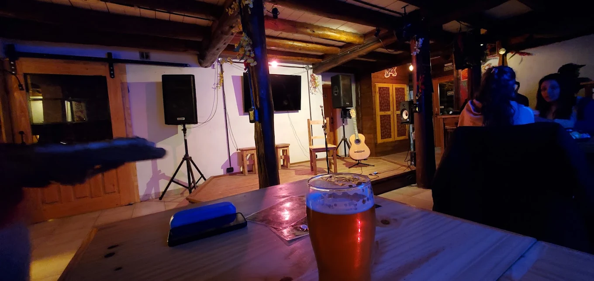

Solo YouTube
$0
Vivo, archivo y suscripciones en el canal que ya existe. Rápido; la identidad de Keuken y el orden del archivo quedan a merced de la plataforma.
RESPUESTA A KEUKEN · SEPTIEMBRE 2026
Primero, respuestas cortas a todo lo que dijeron, con lo que necesito que me confirmen. Después, el detalle: opciones, precios de productos nacionales y fuentes, para quien quiera seguir leyendo.
Ver las respuestas ↓
SUS PREGUNTAS, RESPONDIDAS
En el orden en que lo dijeron. Cada respuesta enlaza a su sección. Lo marcado en azul es lo que necesito que me confirmen para cerrar la lista de compra.
Tenemos algunas de esas cosas del rider técnico que planteaste.
Perfecto: lo que ya tienen se descuenta y se compra solo lo que falte, después de probarlo.
Para avanzar: ¿qué tienen hoy? Consola: marca, modelo y una foto de sus entradas y salidas. Computadora: modelo. Cámaras, micrófonos, pies, cables y grabadora.
Lo que ya tienen y la prueba ↓Tendríamos que hacer una prueba acá.
Sí. Una tarde en el salón con un guion corto: cámaras, un ampli, una voz acústica y la mezcla. De ahí sale la lista de compra.
Para avanzar: ¿qué tarde les queda cómoda? Mejor con músicos que suelan tocar ahí.
El guion del ensayo ↓A veces cambiamos de lugar el escenario.
Varios puntos fijos arriba, en vigas o techo, y las cámaras se mudan al que corresponde. El encuadre se repite y los cables van por arriba. Referencia: $71.952 por cuatro puntos y dos rótulas.
Para avanzar: ¿se puede atornillar en las vigas? ¿Cuántas posiciones distintas usa el escenario?
Cómo montar las cámaras ↓Las presentaciones salen con amplificadores: hay que llevarlos a la consola y tener esa premezcla de la grabación.
Un micrófono por amplificador a un canal libre, o una DI para bajo y teclado, y una mezcla propia para internet desde un envío auxiliar de la consola. Referencia: $142.121 por ampli; la interfaz, $232.000, solo si el USB de la consola no manda esa mezcla.
Para avanzar: con la foto de la consola vemos si tiene auxiliares libres y USB. ¿Cuántos amplificadores suenan a la vez, como máximo?
Micrófono, DI y premezcla ↓Algunas cosas son muy acústicas o sin consola: una Tascam o una Zoom para una grabación de aire; cuestiones de teatro.
De acuerdo. Una grabadora estéreo Zoom H1essential, $290.900: graba en tarjeta y manda el audio por USB a OBS sin consola. Sirve para acústicos y teatro.
Para avanzar: ¿tienen alguna grabadora o micrófono de ambiente para probar antes de comprar?
Sin consola y teatro ↓¿Lo transmitimos por YouTube o en una landing propia con el video pasando?
Por YouTube, con la web de Keuken como casa: los videos se insertan sin costo y quedan ordenados por fecha y artista. Una landing con reproductor propio cuesta por minuto visto, no trae público y no elimina los derechos.
Por qué YouTube y qué aporta la web ↓Hay covers que nos banean el video al toque, y con tres o cuatro hay que presentar un informe para que no nos jueguen en el canal.
Un cover no banea. Genera un reclamo automático que afecta solo a ese video: el titular cobra los anuncios o lo bloquea en algún país. Las faltas que cuentan son retiros formales pedidos a mano, y tres o cuatro reclamos no son tres faltas.
Reclamo, falta y vivo, con fuentes ↓¿Y si toca un DJ en vivo?Una pregunta que sumamos nosotros.
Un DJ pasa temas grabados, y eso YouTube lo reconoce en el momento: puede cortar ese vivo. La solución: esa noche sale en vivo por Mixcloud Live, una plataforma con licencias de los sellos hecha para DJ sets, con el mismo OBS y las mismas cámaras. Al día siguiente el set se sube a YouTube, donde queda visible con reclamos, como los live sets que se escuchan todos los días. Costo: una suscripción mensual a Mixcloud Pro.
Para avanzar: ¿programan noches de DJ? Si sí, sumamos Mixcloud al plan.
Cómo funciona ↓Está la movida de si monetizás o no monetizás los videos; habría que investigar esa parte.
Investigado: monetizar no cambia los reclamos. Lo que existe es el reparto de ingresos en covers aptos cuando el canal entre al Programa de socios. Juega a favor.
Monetización y aportes del público ↓¿Por qué canales va a salir esto? ¿O una landing con todos los videos que redireccione al canal de YouTube?
Sale por YouTube, vivo y archivo. Y sí a la landing: la web de Keuken con todos los videos, la agenda, los artistas y los aportes, que lleva al canal. Esa web la hago a la gorra.
Para avanzar: ¿quién administra el canal de YouTube de Keuken? Hace falta ese acceso para habilitar los vivos, y YouTube tarda hasta un día en activarlos.
La web a medida ↓01 / VIDEOS
La gente escucha música en YouTube por costumbre: busca, se suscribe y vuelve. Una web propia no cambia ese hábito; lo aprovecha.
Búsquedas, recomendaciones y suscripciones traen público que todavía no conoce a Keuken. Cuando toque alguien con renombre, su comunidad comparte el vivo y se queda suscripta. Y la transmisión, el archivo y el reproductor no cuestan nada.
Cómo recomienda videos YouTube ↗Identidad propia, la programación, los recitales anteriores ordenados por artista, el contacto y los aportes. Cada video insertado apunta al canal, así que cada visita a la web también suma suscriptores. Un video bloqueado en YouTube tampoco se ve insertado: la web es la casa, no un refugio de derechos.
Videos insertados en una web ↗Un alias o enlace de aporte del centro en la descripción del video y en la web, y un acuerdo con cada artista sobre cómo se reparte lo de su fecha.
Argentina está en el programa ampliado: con 500 suscriptores, 3 publicaciones válidas en 90 días y 3.000 horas válidas en 12 meses se habilitan membresías y Super Chat. Los anuncios piden 1.000 suscriptores y 4.000 horas. Monetizar no habilita covers ni evita reclamos; lo que existe es el reparto de ingresos en covers aptos, una vez dentro del programa.
Acceso ampliado ↗Requisitos para anuncios ↗Ingresos compartidos en covers ↗
02 / COVERS Y DJ SETS
Cuando se habla de «baneos» se mezclan tres cosas distintas. Separarlas muestra dónde está el riesgo real y qué hacer, sin protocolos.
Automático. El sistema reconoce la canción y aplica lo que decidió el titular: cobrar los anuncios, bloquear el video o solo medirlo, a veces por país. Afecta a ese video; YouTube aclara que «no suelen repercutir en tu canal ni en tu cuenta». Más del 90 % de los reclamos terminan en monetización.
Qué significa un reclamo ↗Solo llega si un titular pide a mano retirar el video. Tres faltas activas pueden cancelar la cuenta; cada una caduca a los 90 días con el curso de derechos de autor. Tres o cuatro videos reclamados no son tres faltas.
Política de faltas ↗Si detecta música grabada de terceros durante una transmisión, YouTube pone una placa y puede interrumpirla; repetirlo restringe los vivos. Pasa con temas grabados, no con una banda tocando un cover.
Derechos en transmisiones en vivo ↗Se transmite y se graba como cualquier fecha. Si el video recibe un reclamo, no se hace nada: el titular cobra sus anuncios y el archivo sigue visible. Si un tema queda bloqueado, se recorta ese tramo desde YouTube Studio o se deja en la copia local.
Mixcloud tiene licencias con Universal, Sony, Warner y los sellos independientes de Merlin, y está hecho para DJ sets: no hay retiros. Se transmite con video, con el mismo OBS y las mismas cámaras, cambiando solo el destino. Mixcloud guarda el audio del vivo en el perfil, no el video: por eso la grabación local se sube a YouTube al día siguiente, donde queda visible con reclamos, como los live sets que todos escuchamos. Requiere una suscripción mensual a Mixcloud Pro.
En el mensaje que confirma cada fecha: «La fecha se transmite por el canal de Keuken y queda grabada; si no querés que se publique, avisanos». Sin papeles ni reuniones.
Informe de transparencia de YouTube ↗Licencias y vivos en Mixcloud ↗Mixcloud Live desde OBS ↗Recortar un tramo reclamado ↗
03 / SONIDO
Cada fuente entra a la consola y el vivo tiene su propia mezcla. Sin consola, una grabadora capta cerca de la acción. Elegí una opción por tema; lo que ya tienen queda en cero.
La mezcla del salón va por el master. Para internet se usa un envío auxiliar libre: cada canal se dosifica de nuevo, con auriculares, hasta que batería, amplificadores y voces se escuchen equilibrados afuera. El público no nota ningún cambio.
Si la consola tiene USB, hay que ver qué manda: muchas envían solo el master. Tener USB no garantiza una mezcla independiente.
La UMC202HD recibe el auxiliar estéreo o un par de micrófonos, no ambas cosas a la vez. Los cables desde la consola se compran después de ver sus conectores.
Grabar cada canal por separado para mezclar después es una etapa posterior: otra interfaz o consola y horas de mezcla por fecha.
Guía de mezcla para streaming · Yamaha ↗Guía UMC202HD · Behringer ↗
La prioridad es entender cada palabra. Para una narración en un punto fijo alcanza un micrófono cercano. En una escena con movimiento, la grabadora o el par C-2 cerca del área de actuación, y un ensayo escuchando con auriculares.
Si las voces quedan lejos, alquilar o pedir prestados micrófonos de diadema o solapa para esa obra. Un micrófono de ambiente registra el entorno; no separa la voz del público ni de la reverberación.
04 / CÁMARAS
La idea de Keuken es la correcta: varios puntos de montaje fijos arriba y, cuando el escenario cambia, la cámara se lleva al punto que corresponde.

Una base atornillada en cada punto útil y una rótula por cámara. La cámara se desenrosca de un punto y se enrosca en otro en un minuto; como el punto es siempre el mismo, el encuadre se repite. Los cables van por arriba, fuera del paso.
Qué cuidar: la altura. Desde el centro del techo la cámara mira demasiado hacia abajo; conviene la viga más baja o la más cercana a la pared opuesta para la toma principal. También el permiso para atornillar, una retención de seguridad y el largo real de las extensiones USB.
El escenario estimado es de 4 × 2 m. Los 78° de la C920 son un campo diagonal: no garantizan que entren cuatro metros de escenario desde dos metros de distancia. La posición se elige con una prueba de imagen. Para la toma cercana, empezar a 1–2 m del músico.
Medir el cable por su recorrido real, con holgura y sin cruzar el paso. Probar las dos cámaras a la vez y las extensiones USB bajo carga. Las cámaras deben tener rosca de 1/4″.
Medidas y carga del R094 · Ulanzi ↗C920 · Logitech ↗Ver el plano de la propuesta →
05 / LA PRUEBA
Tienen parte del equipo y el salón tiene sus reglas. Una tarde de prueba decide más que cualquier lista armada de lejos.
Lo que falló o faltó en la prueba entra a la lista. Lo demás, no. Cada tema tiene una opción «con lo que ya hay» que cuesta cero.
Armar la lista ↓06 / LISTA DE COMPRA
Elegí una opción por tema en las secciones anteriores o cargá las recomendaciones de una vez. Nada se suma solo.
Ofertas con stock en vendedores nacionales al consultarlas. Precio por pago único. Los productos en tu lista aparecen destacados.
Ofertas con stock en vendedores locales, precio por pago único. Entrega a domicilio en Lago Puelo, con preferencia por Andreani: costo, fecha y transportista se confirman con cada vendedor antes de pagar. El catálogo puede cambiar de vendedor; revisar la oferta indicada en cada ficha.
UNA PROPUESTA PARA KEUKEN
Les propongo diseñar y desarrollar una web propia para Keuken: un lugar con su identidad, donde descubrir la programación, volver a los recitales y acompañar al centro.
Un aporte voluntario, sin monto fijo ni mínimo. Ustedes eligen cuánto aportar por el trabajo, según sus posibilidades.
Diseño propio, fotografías del espacio y una experiencia cuidada en celular y computadora.
Agenda, información de los artistas y enlaces de contacto o reservas.
Vivos y recitales de YouTube integrados en la web, con un archivo para volver a escucharlos.
Redes y un enlace de aporte para que el público pueda colaborar con el centro.
Antes de empezar, acordamos las secciones, los contenidos y cómo se actualizarán. Si eligen un dominio propio u otros servicios pagos, esos costos se acuerdan por separado. Las ampliaciones y el mantenimiento futuro también se conversan aparte.
CÓMO EMPEZAR
Con eso cerramos la lista de compra, habilitamos el canal
y preparamos la primera sesión.